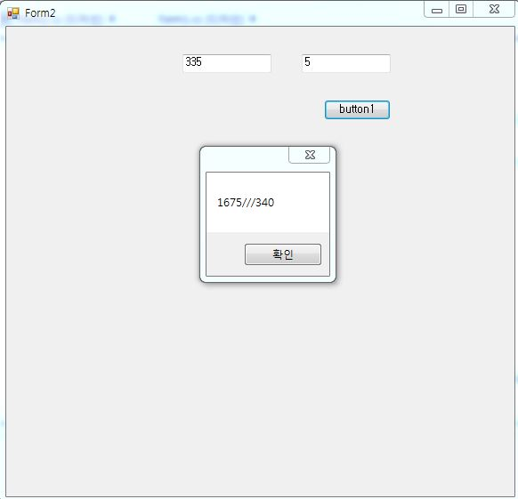
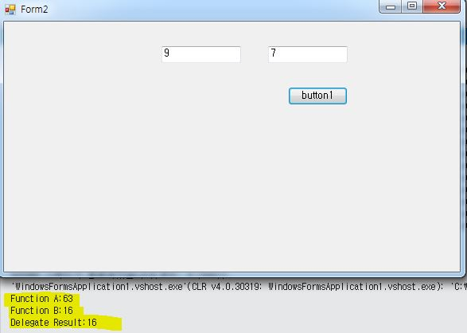
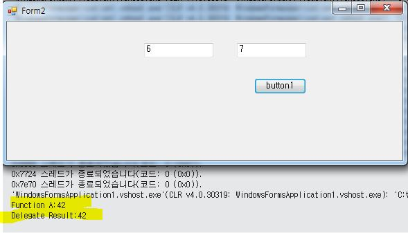
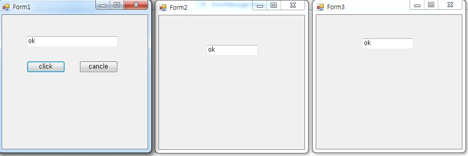

查了很多资料，现在按自己的理解，记录一下C#中委托和事件的用法。
Delegate
什么是委托
在.NET Framework 中通用类型系统支持五种类别的类型：类，结构，接口，枚举，委托。
委托在C#中用法就类似于C，C++中的指针的用法，是一个可以保存对方法引用的引用类型变量。委托主要用在事件处理方法，或者是回调方法，隐性派生自System.Delegate类。也可以把委托看为是event和event handler之间的管道。
声明委托
委托的声明方法为 public delegate type_of_delegate delegate_name()，例如public delegate int mydelegate(string s, bool true), 声明了一个返回值为int, 参数值类型为string 和bool的委托。
需要注意的是：
可以声明一个没有参数的委托。实例化委托时，声明的委托应当和所要引用的方法有相同类型相同数量的参数以及相同的返回值类型。
例如，实例化一个委托：1
2
3
4
5
6
7
8
9
10
11
12
13
14
15
16
17
18
19public delegate double delegate_test(int x, int y); //第一步，声明委托
//第二步，委托所要引用的方法，和声明的委托一样相同的参数和返回值类型
public static double A(int m, int n) {
return m * n;
}
public static double B(int m, int n) {
return m + n;
}
private void button1_Click(object sender, EventArgs e) {
delegate_test de1 = new delegate_test(A); //第三步，创建委托对象（实例化）
delegate_test de2 = new delegate_test(B);
int v1 = Int32.Parse(textBox1.Text);
int v2 = Int32.Parse(textBox2.Text);
double number1 = de1(v1,v2); //第四步，调用委托
double number2 = de2(v1, v2);
MessageBox.Show(number1.ToString() +"///"+number2.ToString());
}
运行结果：

其中方法A和指向方法A的委托delegate_test的返回值类型都为double， 都有两个int型参数。可以发现委托的实例化和一般方法的用法几乎一样。例如delegate_test de1 = new delegate_test(A); de1(v1,v2);
多播
Multicast Delegate 是指一个委托包含多个方法的引用，称为多播委托，相当于创建了一个委托组合，调用的时候按委托组合依次调用多个方法，可以使用+=来添加委托，使用-=来移除委托（即为Delegate.Combine，以及Delegate.Remove的简化）。
如果委托中存在多个带返回值的方法，调用委托的返回值为最后一个方法的返回值。
则上面的例子可以改为1
2
3
4
5
6
7
8
9
10
11
12
13
14
15
16
17
18
19
20
21public delegate double delegate_test(int x, int y);
public static double A(int m, int n) {
Console.WriteLine("Function A:"+m * n);
return m * n;
}
public static double B(int m, int n) {
int c = m + n;
Console.WriteLine("Function B:"+c);
return m + n;
}
private void button1_Click(object sender, EventArgs e) {
delegate_test de1 = new delegate_test(A);
int v1 = Int32.Parse(textBox1.Text);
int v2 = Int32.Parse(textBox2.Text);
de1 += new delegate_test(B);
// de1 -= new delegate_test(B);
double number1 = de1(v1, v2);
Console.WriteLine("Delegate Result:"+ number1.ToString());
}
运行结果为：

可以看出调用委托后，依次执行了方法A，方法B，并最终以方法B的结果输出。若此时用-=的方法移除刚刚添加的方法B，则只调用方法A。结果如图所示：

利用多播实现多窗体通信
现在用另一个例子来总结回顾一下。
Form1:1
2
3
4
5
6
7
8
9
10
11
12
13
14
15
16
17
18
19
20
21
22
23
24
25
26
27
28
29
30
31
32
33namespace WindowsFormsApplication2
{
public delegate void SendMessage(String s);
public partial class Form1 : Form
{
SendMessage sendMessage;
private String message;
public Form1()
{
InitializeComponent();
Form2 f2 = new Form2();
Form3 f3 = new Form3();
f2.Show();
f3.Show();
sendMessage = new SendMessage(f2.showMessage);
sendMessage += new SendMessage(f3.showMessage);
}
private void button1_Click(object sender, EventArgs e)
{
message = textBox1.Text;
sendMessage(message);
}
private void button2_Click(object sender, EventArgs e)
{
message = " ";
sendMessage(message);
}
}
}
Form2 以及 Form3:1
2
3public void showMessage(String s) {
textBox1.Text = s;
}
运行结果如图，当点击Form1的click按钮时，可以将TextBox1的内容同时传递给Form2以及Form3。点击cancle按钮时，则会同时清空。

委托先介绍到这里，下一篇整理一下事件。
[1]:参考 https://www.codeproject.com/Articles/1009930/
[2]: 参考 http://blog.csdn.net/J_Kang/article/details/51336551